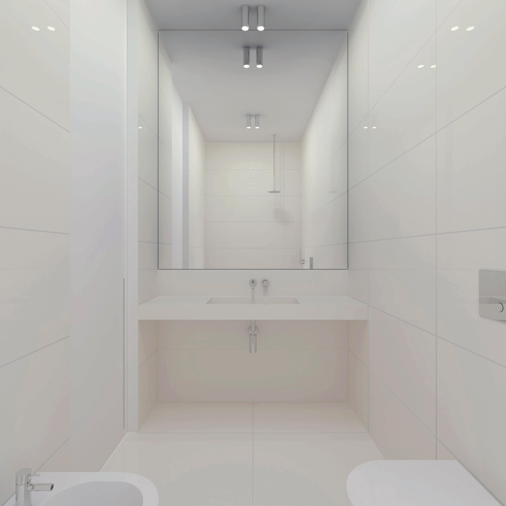
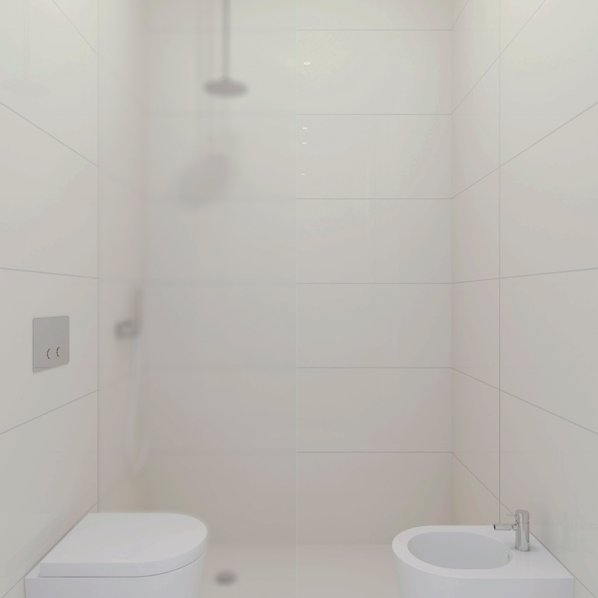
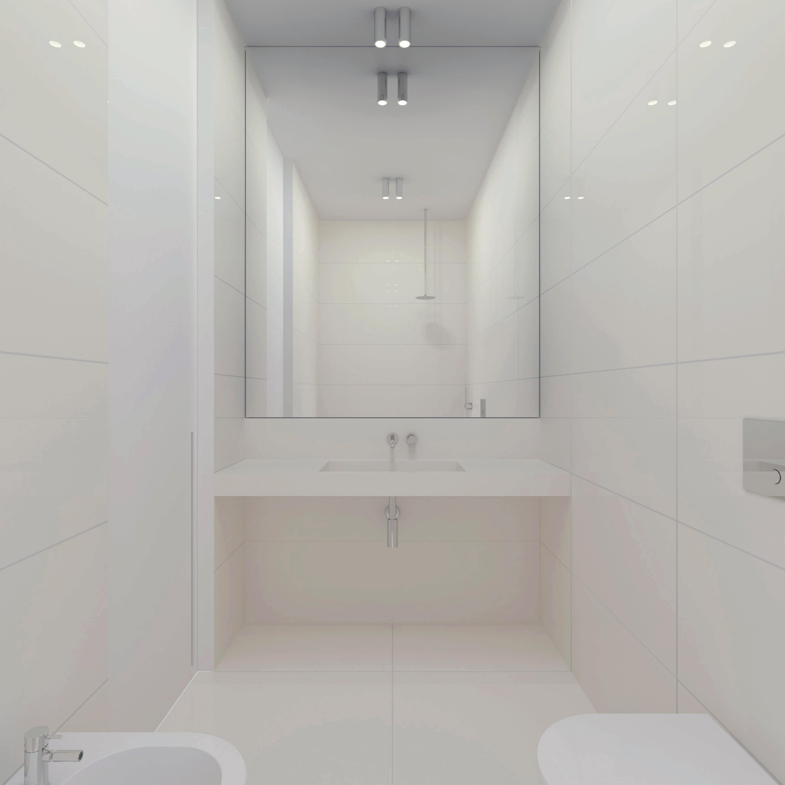
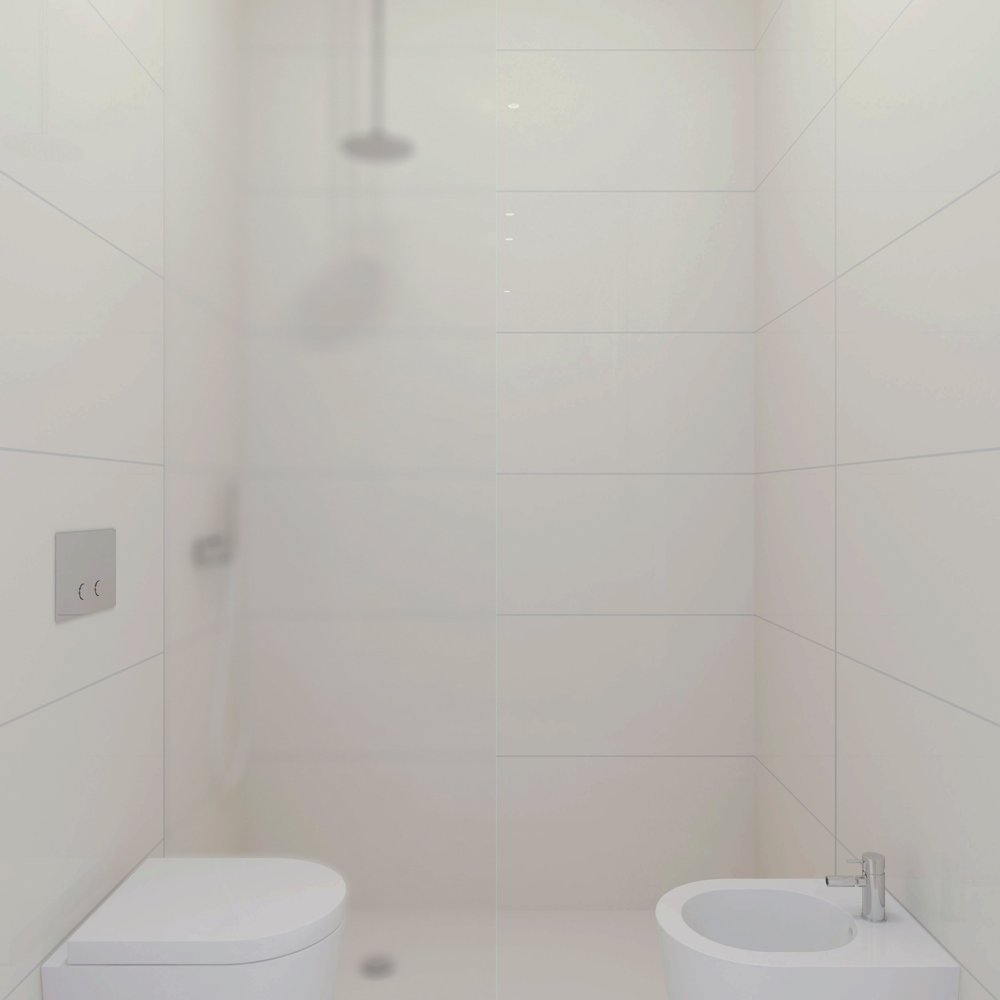

HOUSE AV
The apartment is situated in a historical five-story building from the early 20th century. The occupant of the flat is currently a single individual who is focused on their career. Due to their busy lifestyle, the client required a small study area for work and a place to unwind.
The apartment boasts three large east-facing windows that offer a scenic view of the Adriatic Sea. To make the most of the abundant natural light flowing in through the windows, a deliberate choice was made. The concept involved using evanescent diaphragms, which are drape-like walls made of oak wood and translucent glass, to divide the different areas of the living space. These areas encompass cooking and dining, leisure time, recreational activities, and work.
LOCATION:
Bari, Italy
AREA:
75m²
YEAR:
2016
TEAM:
D. Covella, A. Vacca